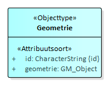

Creative Commons Attribution 4.0 International Public License (CC-BY)
Samenvatting
Deze standaard beschrijft de specificaties van het model Basisgeometrie.
Status van dit document
Deze paragraaf beschrijft de status van dit document ten tijde van publicatie. Het is mogelijk dat er actuelere versies van dit document bestaan. Een lijst van Geonovum publicaties en de laatste gepubliceerde versie van dit document zijn te vinden op https://www.geonovum.nl/geo-standaarden/alle-standaarden.
Dit is een definitief concept van de nieuwe versie van de standaard. Wijzigingen naar aanleiding van consultaties zijn doorgevoerd.
De programmaraad van Geonovum beoordeelt dit definitief concept. Keurt zij het goed, dan is er een nieuwe standaard.
1. Inleiding
Dit model voor het gebruiken van een basisgeometrie is een specifieke toepassing voor het koppelen van geometrie aan een informatieobject.
NEN 3610, het Basismodel geo-informatie, beschrijft een geo-object als
abstractie van een fenomeen in de werkelijkheid, dat direct of indirect is
geassocieerd met een locatie relatief ten opzichte van de aarde. Een geo-object
heeft dus als eigenschap een locatie. Deze locatie kan gerealiseerd worden
doormiddel van coordinaten met een georeferentie, een geometrie. Het fenomeen of
het object zelf heeft ook kenmerken die het object definieren.
Informatiemodellen modelleren de gezamenlijkheid van
objectkenmerken inclusief locatie en geometrie.
Er zijn situaties waarbij verschillende modellen gebruikt worden om dezelfde
objecten in de werkelijkheid te modelleren met elk een specifieke set van
kenmerken maar wel met dezelfde locatie. Het enige dat de modellen gemeenschappelijk hebben
is de geometrie van het object. Indien er behoefte is om uit het oogpunt van
voorkomen van redundantie de modellen te normaliseren vanuit het geometrie
perspectief is een centraal model voor alleen geometrie een optie.
Dit model Basisgeometrie biedt hiervoor een gestandaardiseerde oplossing. Het
model beschrijft een geometrie als een apart objecttype dat vervolgens als een
eigenschap gebruikt kan worden door een objecttype van een ander
informatiemodel. Doel is het gezamenlijk kunnen gebruiken van een geometrie of
geometriebestanden door verschillende informatiemodellen. Het objecttype
Geometrie in Basisgeometrie bevat alleen een attribuut geometrie en heeft geen
inhoudelijke attributen.
2. Toepassingsdomein
Het toepassingsdomein van Basisgeometrie is geo-informatiemodellen die een
externe geometriereferentie nodig hebben. De reden voor een externe
geometriereferentie kan zijn het gezamenlijk gebruik van geometrien of
geometriebestanden door meerdere informatiemodellen in een gezamenlijke
ketenuitwisseling.
3. Algemene informatie
3.1 Informele beschrijving
Het model is ontwikkeld binnen de omgevingswet voor de ketenuitwisseling van
bevoegd gezag naar landelijke voorziening. Twee informatiemodellen, IMOW en
IMOP, gebruiken daarbij gezamenlijke geometrieën.
Beide modellen koppelen andere informatie aan dezelfde geometrie. Door de
geometrie apart te modelleren, los van de inhoudelijke informatie, ontstaan
zelfstandige geometrie objecten.
Vanuit de domeinmodellen kan inhoudelijke informatie bijvoorbeeld via een
klasse genaamd locatie door een associatie aan een geometrie worden gekoppeld. Ten
opzichte van het refererende objecttype gedraagt de geometrie zich als een
eigenschap.
3.2 Normatieve referenties
3.3 Termen en definities
GML: Geography Markup Language
4. Identificatie
Dit hoofdstuk beschrijft de identificatie van de dataspecificatie. In onderstaande overzicht is de beschrijvende informatie opgenomen van de dataspecificatie.
Titel
Basisgeometrie
Samenvatting
Het informatiemodel
Basisgeometrie beschrijft een geometrie als een apart objecttype dat als een eigenschap gebruikt kan worden door een objecttype van een ander
informatiemodel. Doel is het gezamenlijk kunnen gebruiken van een geometrie of geometriebestanden door verschillende informatiemodellen. Het objecttype
Geometrie in Basisgeometrie bevat alleen een attribuut geometrie en heeft geen inhoudelijke attributen.
Onderwerpcategorieën
Algemene
toepassing van geometrie zonder domeininformatie.
Geografische beschrijving
Niet
van toepassing.
Doel
Beschrijving
van het geometriemodel voor koppeling van geometrie als eigenschap aan een
inhoudelijk objecttype uit een ander informatiemodel.
Aanvullende informatie
Deze
versie is ontwikkeld voor de toepassing binnen het informatiemodel voor de
omgevingswet (IMOW) en het daaraan gerelateerde informatiemodel voor officiele publicaties (IMOP). Doel is het gezamenlijk
delen van geometrieën en geometriebestanden. Dit basisgeometrie model is gepubliceerd als inhoud-neutraal model dat ook door andere
informatiemodellen gebruikt kan worden.
5. Informatiemodel
5.1 inleiding
In dit hoofdstuk wordt aan de hand van een UML-klassediagram en een
objectcatalogus de informatieinhoud en -structuur van model Basisgeometrie
beschreven.
5.2 UML diagram
Het model Basisgeometrie bevat maar één objecttype: Geometrie.

5.3 Objectcatalogus
5.3.1 Objecttype Geometrie
Naam
Geometrie
Definitie
Geometrie is het object dat de geometrie bevat: de geometrische bepaling van een locatie door middel van coördinaten.
Toelichting
5.3.2 Attribuutsoort id
Naam
id
Definitie
Unieke identificatie
Waardetype
CharacterString
Herkomst
Basisgeometrie
5.4 Voorbeeld
Het volgende UML diagram geeft een voorbeeld waarin twee domeinmodellen Domein A
en Domein B van uit een objecttype Locatie verwijzen naar een gemeenschappelijk
geometrie objecttype.
De geometrie is daarbij een eigenschap van de locatie-objecten uit de twee
domeinmodellen.
6. Referentiesystemen
6.1 Coördinaatreferentiesysteem
Het coördinaatreferentiesysteem wordt bepaald door het informatiemodel of de modellen die gebruik maken van Basisgeometrie.
Voor het definiëren van de coördinaatreferentiesystemen kunnen de EPSG-codes
(European Petroleum Survey Group) worden gebruikt.
Voor de handliggende coördinaatreferentiesystemen zijn:
RD stelsel (2D): EPSG:28992
RD-NAP (3D): EPSG:7415
ETRS89 (2D): EPSG:4258 (lengte, breedte in graden)
ETRS89 (3D): EPSG:4937 (lengte, breedte in graden, hoogte in meters tov
ellipsoide)
ETRS89 + EVRF2007 (3D): EPSG:7423 (lengte, breedte in graden, hoogte in
meters tov NAP)
6.2 Tijdreferentiesysteem
Niet van toepassing. Er zijn geen tijdparameters opgenomen.
7. Gegevensuitwisseling en -publicatie
7.1 Leveringsmedium
Het medium waarmee de data worden geleverd is niet gedefinieerd op dit niveau. Het wordt bepaald door de toepassing van het informatiemodel dat de Basisgeometrie toepast.
GML versie en profiel: GML 3.2.2 – SF-0. Simple features profile 0 is gekozen omdat de inhoud van dit model geen
constructies heeft die complexer zijn dan SF-0. Voor geometrietypen is er tussen
SF-0, SF-1 en SF-2 geen verschil. Over de data gekoppeld aan dit geometriemodel
wordt niets gezegd. Die hebben hun eigen comlexiteitseisen.
Coordinaatrefrentiestelsel: Het is verplicht om de srsName in te vullen op het hoogste niveau van een geometrie. Dat betekent dat van een samengestelde geometrie, een multigeometrie, alleen op het niveau van de samenstelling de srsName verplicht is ingevuld.
De beschrijving van de respectivelijke EPSG codes zijn te vinden onder de url's met het format: "http://www.opengis.net/def/crs/EPSG/0/""epsgcode". Bijvoorbeeld: http://www.opengis.net/def/crs/EPSG/0/28992
GML:id: Voor implementatie in GML zijn er aanvullende specificaties als het
gaat om het invullen van de <gml:id>. De <gml:id> heeft geen
informatiewaarde maar is nodig om interne en externe referenties te realiseren
voor geo-toepassingen. Voor de GML 3.2.1 was dit een verplicht
element maar voor GML 3.2.2 is dit optioneel. Voor de implementatie van de
verwijzing naar de geometrie-objecten moet de <gml:id> voor het
geometrie-object ingevuld zijn. Elk geometrie-object krijgt daarom een
<gml:id>. Voor het geometrietype zelf geldt dat de <gml:id> op het hoogste
niveau van de geometrie van het type verplicht is ingevuld.
Invulinstructie: de in een GML-bestand opgenomen geo:id is een globaal
unieke identifier (GUID). De losse ID’s van de bijbehorende gml:id’s worden
gevuld op basis van het geo:id inclusief een prefix van <id->. In onderstaand GML-fragment wordt weergeven hoe dit er uitziet.
Zie in bovenstaande fragment dat geo:id de GUID bevat die meegegeven wordt
aan de geometrie. De volgende regels zijn van toepassing voor de verdere ID’s:
element
Regel voor ID
voorbeeld
geo:id van Geometrie-object
GUID
2ed9cfaf-8ef5-43ee-b3a2-0d3b8820c39c
gml:id van Geometrie-object
“id-”+ GUID + “-xx”
id-2ed9cfaf-8ef5-43ee-b3a2-0d3b8820c39c-xx
gml:id van geometrietype
“id-”+ GUID
id-2ed9cfaf-8ef5-43ee-b3a2-0d3b8820c39c
7.3 Nauwkeurigheid van coördinaten.
De nauwkeurigheid van de coördinaten opgenomen bij een geometrie moet minstens
de nauwkeurigheid realiseren die vermeld wordt in het informatiemodel of
bijgeleverde inwinningseisen. Meestal is het aantal decimalen dat in software
standaard wordt opgeleverd groter. Deze decimalen hebben dan geen betekenis
meer. Om te voorkomen dat er te grote databestanden ontstaan wordt aanbevolen de
coördinaten af te ronden op 1 millimeter of het equivalent daarvan in graden.
Aanbeveling:
Coordinaten opgenomen bij een geometrie worden standaard uitgewisseld met een
getalsnauwkeurigheid van 1 mm of het equivalent daarvan in graden. Voor RD,NAP
en ETRS89 komt dat overeen met de volgende nauwkeurigheden:
RD in meters 3 decimalen (1 mm); NAP-hoogte in meters 3 decimalen (1 mm); ETRS89-breedte in graden 8 decimalen (1,1 mm); ETRS89-lengte in graden 8 decimalen (0,7 mm); ETRS89-hoogte in meters 3 decimalen (1 mm).
Alles wat nauwkeuriger is wordt afgerond op deze nauwkeurigheid van 3 of 8
decimalen. Afronding is volgens de volgende regel: 0.0015 -> 0.002; 0.0014 -> 0.001.